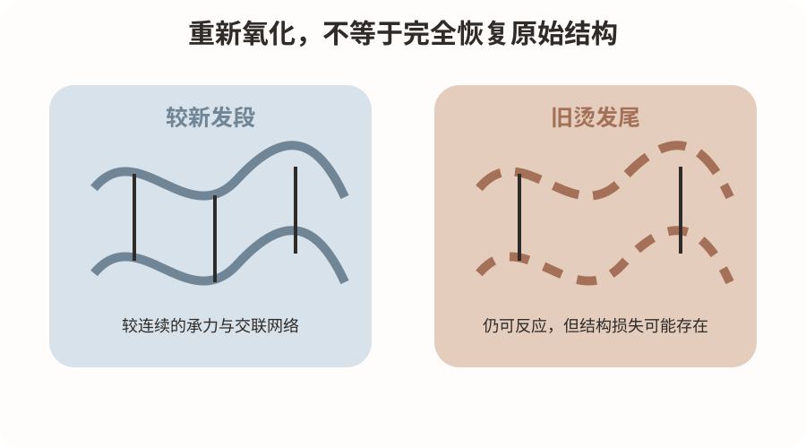
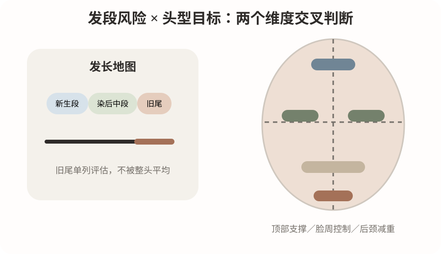
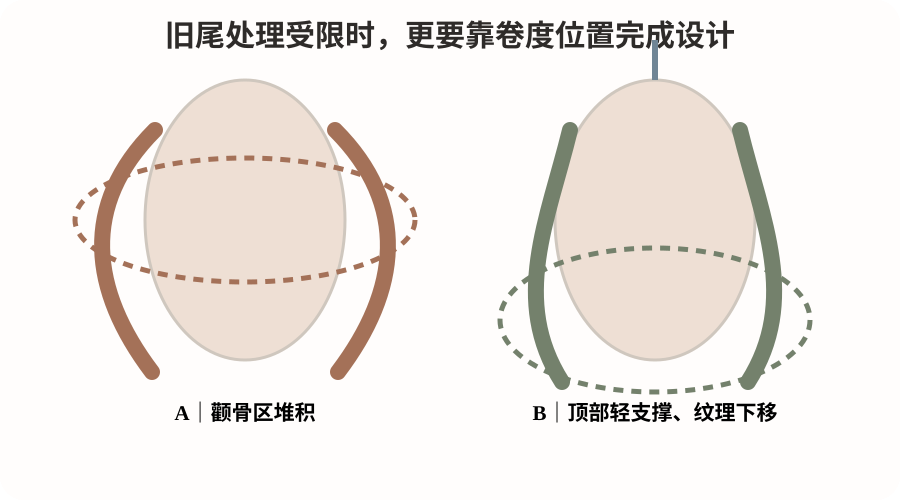

2026-10-12
今天先分清“还能发生还原与氧化”和“仍有足够结构完整性”两件事。毛发皮质层中的角蛋白中间丝和基质共同承担机械性能；二硫键提供重要的共价交联，氢键、离子相互作用和含水状态也影响刚度与可塑性。烫发还原降低部分二硫键约束，卷杠、张力与水分建立曲率，加热促进结构松弛和水分迁移，氧化帮助部分巯基重新形成二硫键。
但反复烫染和高温可能同时带来毛鳞片破坏、蛋白流失、半胱氨酸位点氧化和皮质层力学下降。氧化定型能够稳定新的形态，却不能保证把所有受损结构恢复成原始状态。因此，旧烫发尾卷度不足可能是承力和回弹不足，不一定是药力不足。继续增加还原、热量或张力，可能短时间增加弯曲，却让洗后弹性、光泽和整齐度进一步下降。
现场判断顺序应是：先判断该发段能否承受再次处理，再讨论怎样形成目标卷度；不能把“卷不够”自动翻译成“需要更强软化”。

本课优先检索2026-10-05至2026-10-12，未确认该窗口中有直接回答“旧烫发尾怎样二次热烫”的高质量新研究，因此采用近期原始研究和基础专著。
S1为2026年的重复烫发毛束实验，比较传统氧化体系和Bunte盐—巯基交换体系。不同体系在多次处理后的卷曲效率、抗拉强度、显微形态和含硫键指标上出现差异。证据强度为中：它支持重复处理后必须同时看卷度与机械强度，但不能把论文体系直接当作门店商品配方。
S2使用SAXS和固体NMR观察永久烫过程，在指定巯基乙酸铵条件下，角蛋白中间丝相关结构在还原早期已经变化，后续氧化能恢复相当一部分，但不能据此断言所有变化完全逆转。证据强度为中至强的机制证据。
S3为毛发化学与物理行为专业专著，可支持水分、化学历史、纤维力学和表面状态需要一起评估。它不能给出某一商品药水对某一顾客的固定安全温度或时间。
模拟教学案例：32岁，偏宽圆方脸，顶部稍扁，颈部偏短；锁骨下约5厘米，中等发量、细软发。10个月前热烫，4个月前染过6至7度颜色，无漂发史。新生发相对健康，中段略干，发尾约7厘米保留旧烫痕迹，湿态回弹较弱。顾客希望自然法式松弛感，顶部蓬、脸旁不过宽、下摆有纹理，每天整理不超过5分钟。
诊断时分别检查新生段、中段和旧尾的湿态强度、回缩、缠结与断裂。若旧尾出现异常黏滑、拉伸后恢复慢或易断，应停止强化处理，优先讨论避烫或修剪。剪裁保留底线重量，用中低层次释放下半区；顶部只建立轻支撑，脸周控制体积，主要S弯落在下颌以下。旧尾若不适合再烫，不通过小杠、增加圈数或延长加热强行追卷。
药剂依据真实成分、厂家说明和离体毛束结果选择；分区记录第一片与最后一片接触时间。软化结合试卷形态、湿态强度和回弹判断；冲水后统一吸水方法、发片厚度和张力。加热与氧化遵循配套产品和设备说明，不编造通用最优温度。

人物美感上，卷的位置比卷的数量更重要。对偏宽圆方脸和较短颈部，颧骨附近不适合成为最大横向体积。顶部增加少量高度，脸周保留流向，下颌以下建立纹理，通常比全头同一强卷更轻盈。
正面看头发最大宽度是否与脸部最宽处重叠；45度看脸周到下颌的连接是否连续；侧面看后枕圆度与后颈下摆是否平衡。若换成窄长脸，适度增加两侧体积可能更协调，不能机械复制同一方案。
当旧尾不能安全强化时，更要通过剪裁、第一弯位置、卷度重心和轮廓收放完成设计，而不是用更强药力弥补。

图1是结构原理图：左侧表示较新发段较连续的承力与交联网络，右侧表示旧烫发尾仍可能反应，但结构损失和不连续性已经存在。横线不是实际二硫键计数。
图2是技术图：左侧把新生段、染后中段和旧尾分开记录，右侧把顶部、两侧、枕骨和后颈的轮廓目标分区。重点是把发段安全与头型设计交叉判断。
图3是美感图：A方案把最大体积放在颧骨附近，B方案用顶部轻支撑和下半区纹理转移视觉重心。三张图均为原创莫兰迪教学示意，不是实测数据或真人效果承诺。
排杠必须服务于安全边界和轮廓目标。顶部可在约70至90度提升范围内训练轻支撑，避免压根，也不为蓬松追求炸根；枕骨可在约45至75度范围建立后脑圆度，与顶部连续，避免上下断层；两侧可在约30至60度范围顺脸周流向，避免最大体积落在颧骨；后颈可在约0至30度范围控制下摆，旧尾风险高时可不烫或修剪；刘海与脸周依据分缝和毛流单独判断第一弯，避免折痕和全头同圈数。
以上角度以局部头皮切线为0度，属于门店教学候选参数，不是科研验证的通用最佳值。杠径、圈数、发片厚度、张力、含水、温度和时间必须结合具体产品、设备和毛束测试。
先问顾客五件事：最想改变顶部、脸周还是下摆；参考图是自然吹干还是造型后；旧烫和染发分别做到哪里；能够接受修剪多少；每天愿意整理几分钟。
示范话术：“你喜欢的重点不是整头都卷，而是顶部有一点高度、脸旁不过宽、下颌往下有柔和的弯。你的发尾以前烫过，这部分如果弹性已经不足，我不会为了短时间有卷继续加强处理，因为后期更容易毛躁。我会先确定哪些发段能够安全处理，再通过层次和卷度位置把整体轮廓做好；需要修剪的长度也会提前和你确认。”
沟通的目标不是说服顾客接受固定方案，而是让她理解目标效果、发质条件、风险边界与日常整理之间的关系。
题目：新生发健康，中段回弹正常，旧烫尾湿态恢复很慢，顾客希望全头有明显S弯。A全头加强软化；B先评估旧尾能否保留，再设计健康段卷度；C发尾使用更小杠增加圈数。
参考答案是B。正确顺序是发段耐受、人物轮廓、卷度位置、技术参数。A和C都把目标卷度放在毛发能否承受之前。优秀方案不要求所有发段卷得一样，而是让安全处理范围、轮廓和质感相互配合。
低风险毛束实验：比较同一位顾客废弃头发中的较新发段与旧烫尾湿态回缩。两组各至少10根、统一约10厘米，相同水温浸水3分钟；在无异常阻力前提下轻柔拉伸至约10.3厘米，释放30秒后记录回缩长度、断裂、异常延伸与缠结，24小时后复查。唯一比较因素是发段来源，浸水时间、拉伸长度、释放时间和拍摄条件保持一致。
这个实验只训练分段识别风险，不能用于推导药剂安全浓度或温度。不同发段还同时存在发龄和暴露历史差异，不能把结果解释成单一因素因果。出现明显异常时停止反复拉扯。
最重要的原理：二硫键可以参与重新塑形，但重复化学和热历史留下的结构损失，不会因为再次氧化而完全消失。
最容易犯的错误：把旧发尾卷度不足直接理解成需要更强软化、更长加热或更小杠。
明天最值得观察：分开记录健康中段与旧烫尾的湿态回弹、缠结和洗后整齐度，不要只给整头写一个受损等级。